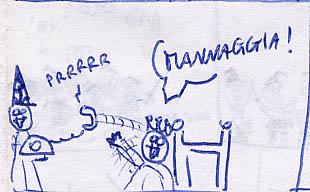

Un giorno, di notte, all’improvviso, NORAD, il mio desktop di casa decide di dare i numeri. Non vede una ram, non vede piu’ un hard disk, rebooto, non parte, si pianta. reboot, alla fine riparte, e faccio quel che devo fare(tm)

Improvvisamente, PEMM! la scheda di rete non funziona piu’. CASPITA, MANNAGGIA, PERDINCI, PORCO DDINCI, PORCO DDINCI, non solo, ma norad SI FREEZA. FRIZZA LA SBORRA.
ORRORE E STUPORE, IL PINGUE AFRORE MI OLEZZA L’ASCELLA.
Mi dico, la motherboard e’ andata. Ne compro una su EGAY, arriva, la provo, e succede un maledetto INFERNO ORRENDO.
Monto 512 mega ram, ne vede 256. Metto una sola ram, tutto ok. Metto l’altra, tutto ok. Le rimetto tutte e 2, vede solo 256 merda di mega. Ne metto una sola, la mb non parte piu’. Riavvio, parte. Spengo, monto 512, e gli hard disk, un hard disk neanche si accende.
VIOLENTO L’HARD DISK. non parte. Prendo l’hard disk e lo monto da solo, NON PARTE. Li monto tutti e due, parte un solo hard disk. Maledico il CRISTO MORTO, prendo l’alimentatore, stacco tutto, collego solo i 2 hard disk all’alimentatore. NE PARTE SOLO UNO. Prendo l’hard disk che non parte e lo collego da solo all’alimentatore. NON PARTE.
Prendo l’hard disk che non parte, e lo collego ad un’altro alimentatore.SI ACCENDE. UNA SCHEGGIA DI FOLLIA SI IMPOSSESSA DI ME, E MI VEDO VOLARE, NUDO, SOPRA LA CITTA’, DEFECANDO ABBONDANTEMENTE SUL PAESAGGIO SOTTOSTANTE, A CAZZO DURO.
Nelle 2 scorse settimane provo, in ordine sparso: un nuovo alimentatore, una nuova motherboard, con della nuova RAM DDR, un nuovo processore, una nuova barretta SDRAM, un nuovo CASE, provo anche tutto SENZA IL CASE.
le 3 ram insieme non vanno. ma a 2 a 2 si. Il DURON parte su una motherboard, l’athlon NO. E viceversa, sull’altra motherboard, parte l’athlon, ma il duron NO. La motherboard arrivata da EGAY ha uno slot delle SDRAM che fa FALSO CONTATTO. Vede solo 256 mega, e NON CI SONO CAZZI. Decido di montare lo stesso tutto anche con 256 mega, monto tutto il case con la motherboard comprata su EGAY, e la scheda di rete integrata decide che non esiste piu’. ethernet SPARITA da lspci. pazzesco. PAZZESCO.
Rismonto tutto. Testo i componenti uno ad uno su un TERZO COMPUTER. Le ram sono TUTTE OK. i processori FUNZIONANO TUTTI E DUE. gli hard disk PARTONO E FUNZIONANO. La motherboard originale di norad si pianta a caso, quindi LA SCARAVENTO PER TERRA CON ODIO. L’alimentatore di norad FUNZIONA. Compro un nuovo alimentatore, lo provo, la motherboard nuova parte, ma c’e’ il falso contatto – la rispediro’ al PORCO DI EGAY. Allora prendo la motherboard che stava a medialab, una motherboard NUOVA, CAZZON SEMPRON DURON, 1 GIGA DI RAM DDR, MAI USATA PRIMA. La monto, parte tutto, gli hd si accendono, ok.
login: ED IL SISTEMA E’ COMPLETAMENTE PIANTATO.
AL SANTO PADRE JE SCOPPIA UN EMORRO ‘NCULO. Ci sto 2 giorni a capire che … se GPM, GRAN PORCA MADONNA non trova il MOUSE PS2 IN CULO A SE’, la motherboard SI PIANTA, E NON SO PERCHE’
ISTANTANEAMENTE, MI ASSATANO. Prendo un mouse e lo PIANTO CON ODIO NEL CULO DELLA MOTHERBOARD DEL PORCO DI JAVE’. Riparte tutto, FINALMENTE, tutto smontato sul tavolo, COMPILO IL KERNEL E VAFFAN’ANO.
L’indomani monto tutto nel case, sono ormai certo che il problema era la motherboard. Uso lo stesso alimentatore di prima, penso funzioni a dovere ora, visto che l’ho provato. MONTO TUTTO. ACCENDO.
NON SUCCEDE NIENTE.
CRISTO E’ IL MALE. TREMO, SBAVO, ODIO. MALEDICO, SPUTO, BESTEMMIO.
non so che cazzo fare. riprovo tutto a tappeto, non funziona un cazzo. GLI HARD DISK NEANCHE SI ACCENDONO. Torno al negozio, dato che avevo RESTITUITO l’alimentatore, me lo faccio ridare, lo provo, e TUTTO FUNZIONA.
Mi trasformo nel dottor MENGELE DI ME STESSO, e SPERIMENTO SU DI ME IL DOLORE ATROCE DELLA PAZZIA NEL CERVELLO.
rimonto tutto, ed ora sono alle prese col kernel che non compila, con la ethernet che non viene vista, con gli alsa driver che non caricano una CIPPA DI GRANCAZZO
basta, NE HO ABBASTANZA DELL’INFORMATICA
VAFFANCULO LILO, VAFFANCULO MOUNT, VAFFANCULO KERNEL
VAFFANCULO RAM, VAFFANCULO SWAP, VAFFANCULO E2FSCK
BASTA, BASTAAAAAAAAAAA,
BAAAAAAAAAASTAAAAAAAAAAAA
BASTAAAAAAAAAAAAAA!!!!!!!!!!!
NON NE POSSO PIU, BAAASTAAAHHHHHHH!!!!!!!!!!!
ahahaahhahaha
AHAHAHAHAHAHAH
D’ORA IN POI
GIURO
CHE IL MIO HOBBY SARA’ SOLO UNO:
FICCARE
SI FICCA, SI FICCA!!! SI FICCAAAAAA!!!
SI FICCA? SI? BENE, ANDIAMO! NON SI FICCA? CIAO!
AHAHAHAHAHHAHAHHA
CIAO, FICCHIAMO? NO? CIAO!
CIAO! FICCHIAMO? MA SONO UN UOMO!
NON FA NIENTE! FICCHIAMO UGUALE!
NEL FRATTEMPO, mi terro’ in allenamento, faro’ il FALEGNAME, LAVORO DI SEGA